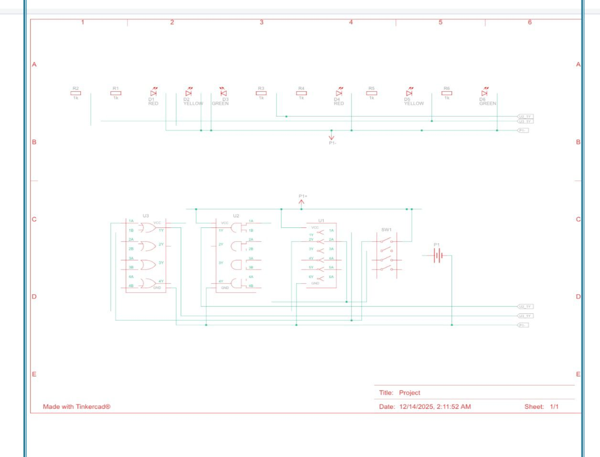

Student | Software Engineering
objective : Software Engineering student looking for an internship to gain real experience working on actual projects
The Smart Inventory & Warehouse Management System with Environmental Monitoring not only manages stock entry, exit, and availability but also monitors environmental conditions inside the warehouse using IoT sensors (temperature, humidity, etc.). The system ensures that each type of product is stored under its required conditions.

This project designs a combinational traffic light controller that manages signals for a main and side road using two input sensors. Based on vehicle presence, it controls red, yellow, and green lights, giving priority to the main road while allowing the side road to turn green only when the main road is empty. The system is developed using a truth table, Boolean equations, and a logic circuit.